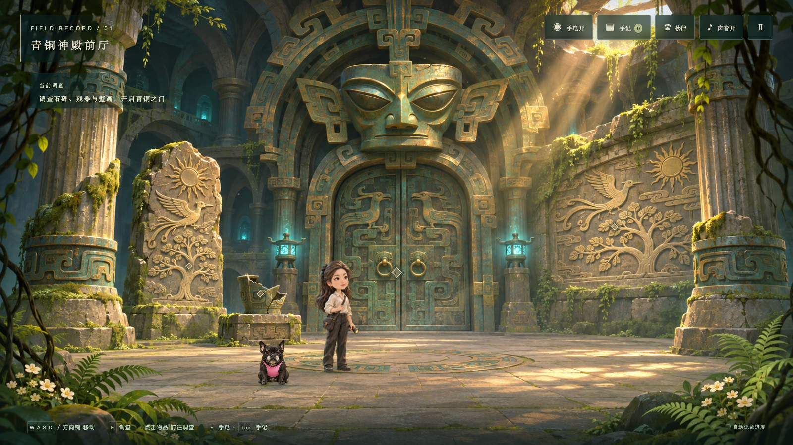
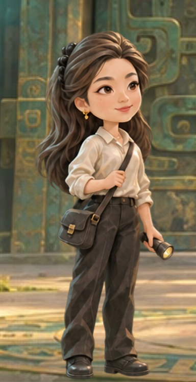
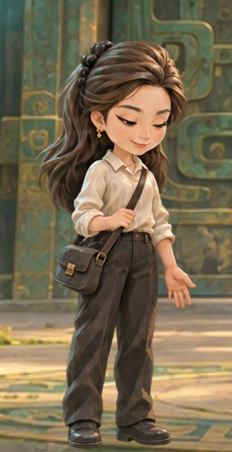
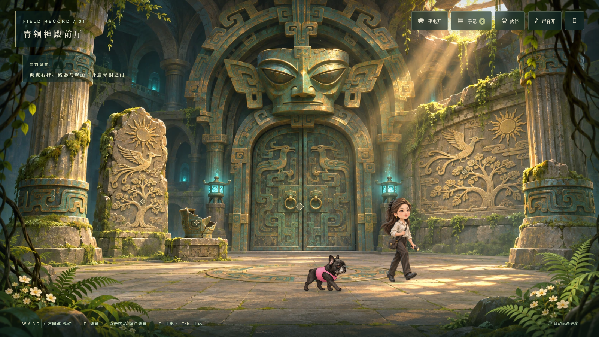

THE EYE OF BRONZE / CHARACTER UPDATE 04
让林悦成为遗迹中的人
保留长发、黑色发饰、金耳饰和白衬衫黑裤，将人偶照片裁切改为统一绘景风格的人物。
重新制作面部、发丝、衣料、斜挎包与手电筒，并加入交替步态、眨眼、观察、发现和看向伙伴的神态。
拖动对比人物前后变化


V3 人偶照片V4 手绘人物实际游戏中的人物细节
下方为真实浏览器运行中的人物局部，以 3 倍像素密度截图。包含场景背景，不是用独立原画代替运行画面。


实际动作录像
真实键鼠操作录制：站立 → 行走 → 左转 → 摸摸伙伴 → 调查石碑。录像无声。
与环境融合的行走画面

三章内容保持完整


人物专项 13 项、完整通关 28 项、宠物专项 15 项检查通过。画面依旧采用 2.5D 固定视角绘景和序列帧，未改为实时 3D。原生 Safari/iOS 实机验收仍待完成。